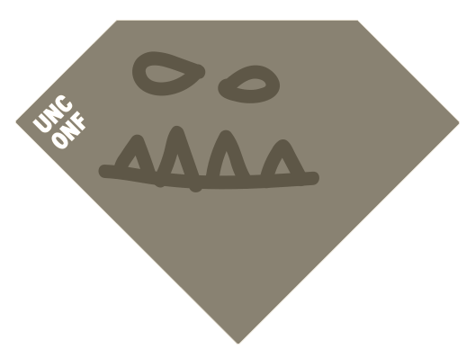
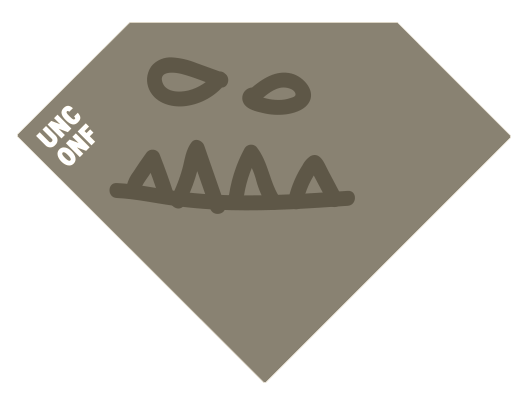

# Unconf
What exactly is an Unconference? It is an Barcamp style event. It works like this: Everybody can propose a talk.
Everybody votes for the talks they want to see. The most voted talks will be held. You decide what will happen!
Read more about what exactly is an Unconference here.
## Prepare a talk
We recommend to prepare slides for your talk. The talk length will be half an hour. You get the chance to pitch your
talk at the beginning of each conference day. Besides talks different formats like workshops or panel discussions are
welcome.
# Where
## Venue
HAW Hamburg
Campus Finkenau
Finkenau 35
22081 Hamburg
Getting there
The easiest way to get there is by walking 500m from the U-Bahn (Underground) station “Mundsburg”, which is about a 7
Minute ride away from the central station (“Hauptbahnhof”).
It’s probably not a good idea to try to go by car, as parking space is very limited and even on a saturday, we can’t
really recommend driving in Hamburgs inner city.
If you are arriving from Hamburg Airport, you should take the S-Bahn (Metro) to Barmbek and then the U-Bahn to
Mundsburg.
Surroundings
The Venue is right next to the Eilbekkanal, a channel that runs directly to the Alster lake (“Aussenalster”) which is
probably a 30 minute walk but especially worth it on a sunny spring day.
## Hamburg
# Inclusivity
## Diversity
Our scholarship program is meant to make Ruby Unconf a better unconference. We want to make this community-focused event
accessible to the wide range of people who are learning, work with, or are Ruby enthusiasts. We welcome applicants from
underrepresented groups in tech to apply. This includes, but is not limited to: women-identifying persons, people of
color, LGBTQIA people, people with physical and mental disabilities and people facing economic and/or political
hardships. Scholarship recipients will receive a Ruby Unconf Hamburg 2020 ticket.
With the purchase of a diversity ticket you help us to make this happen.
We'll inform you as soon as the application phase for diversity tickets will begin.
## Code of Conduct
The heart of the Ruby Unconference is people. This
guideline is meant to support a happy, productive and safe event experience that can welcome new ideas and
inspiration for all attendees. Regardless of gender, sexual orientation, age, ability, ethnicity, socioeconomic
status, and religion (or lack thereof). We gain strength from diversity, and actively seek participation from
those who enhance it.
Read the full Berlin Code of Conduct here.
## Accessibility
Need Help?
Mail: team@rubyunconf.eu
Ruby Unconf is an inclusive unconference and as such strives to be accessible to everyone. See our full accessibility
statement here: Accessibility Statement
 
